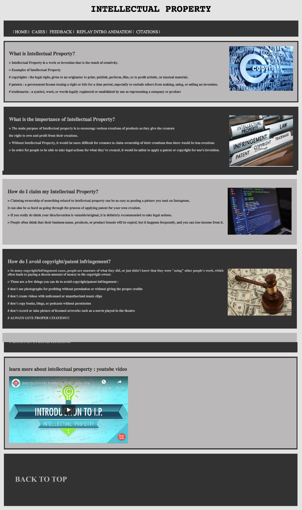

MY FIRST COMPUTER SCIENCE PROJECTü§© (Individual Project)
TOPIC:Environmental Call to Action!
I did reseach about global enviroment and solutions to keep our earth healthy.
The biggest challenge for me was the how to connect HTML to CSS and the use of class in CSS.
What I think I did a good job in this project: Well organized, easy to find what you are looking for.
I learned how to input images, videos and links in to a webpage.
click here to learn moreMY SECOND COMPUTER SCIENCE PROJECTüòê (Partner Project with Pauline)
Topic: Collector's Guide (mini project)
My partner and I dicide to do a shoe collection collection webpage
The biggest challenge for us was timing, we submitted it 10 mins late.
We learned how to work as a team. We also learned how to betther organize mass of date in a table list.We spent a lot of time on how to make the webpage look better.
click here to learn moreMY THIRD COMPUTER SCIENCE PROJECTüòß (Individual Project)
Topic:Pacific Northwest Fall Guide
It was really challenging for me at that time doing a Individual complete project like this. I did research about the PNW area to further develop what can be written as content that match this project.
The biggest challenge is the use of dropdown.
If I could have a change to edit it, I will add a home botton on each page so that the readers won't get confused about the webpage and how it works.
click here to learn moreMY FOURTH COMPUTER SCIENCE PROJECTüò± (Individual Project)

Topic:Buzzfeed quiz
HARDEST PROJECT FOR ME! The use of CSS HTML AND JAVASCRIPT (Each imput have its specific output)
Basically, this is a project that allows you to make your own quiz based on your interest.
It was pretty hard for me to start off.
It finally worked but still a lot to work on with for example the submit botton.
I learned how to figure things out individually rather than rely on other people.
click here to learn moreMY FIFTH COMPUTER SCIENCE PROJECTüò¨ (Partner Project with Amber)
Topic:Intellectual Property
This project allow us to develop deeper about Intellectual Property. In the process of finishing our project, we also learned a lot about different kinds of Properties.
The biggest challenge is organizing the content and how to present in a way that the audience won't get confused.
One of the most satisfied project!
click here to learn more<
CITATIONS
https://www.google.com/imgres?imgurl=http%3A%2F%2Fwww.nextgen.crossgates.org%2Fwp-content%2Fuploads%2F2017%2F01%2Fpracticenote-01.png&imgrefurl=https%3A%2F%2Fwww.nextgen.crossgates.org%2Fblogs%2Fpractice-makes-perfect%2F&docid=IbUM-r6AdLnmdM&tbnid=jO5_L1VU8k1V2M%3A&vet=10ahUKEwjo_IH9s5bnAhWBjp4KHWeUAPUQMwiAASgIMAg..i&w=911&h=950&client=safari&bih=816&biw=1440&q=practice%20makes%20perfect&ved=0ahUKEwjo_IH9s5bnAhWBjp4KHWeUAPUQMwiAASgIMAg&iact=mrc&uact=8https://www.google.com/imgres?imgurl=https%3A%2F%2F401ktv.com%2Fwp-content%2Fuploads%2F2019%2F04%2Fimprovement-graphic_z1U6r9Bd.jpg&imgrefurl=https%3A%2F%2F401ktv.com%2Fimprove-retirement-readiness-5-steps%2F&docid=k0FnNvcynFieHM&tbnid=7yEio95crgW82M%3A&vet=10ahUKEwi87MPutJbnAhWRpZ4KHaDiBe4QMwiCASgGMAY..i&w=4500&h=3375&client=safari&bih=816&biw=1440&q=improve&ved=0ahUKEwi87MPutJbnAhWRpZ4KHaDiBe4QMwiCASgGMAY&iact=mrc&uact=8
https://www.google.com/imgres?imgurl=https%3A%2F%2Freachinghighernh.org%2Fwp-content%2Fuploads%2F2018%2F07%2Fcompetency-portfolio-learning.png&imgrefurl=http%3A%2F%2Freachinghighernh.org%2F2018%2F07%2F02%2Flearning-growth-competency-portfolio%2F&docid=x-VFZ_DJltDlmM&tbnid=2Bj0DvvSCq_caM%3A&vet=10ahUKEwjHs7f5tJbnAhVJsp4KHeNtAZQQMwibASgRMBE..i&w=460&h=300&client=safari&bih=816&biw=1440&q=learn&ved=0ahUKEwjHs7f5tJbnAhVJsp4KHeNtAZQQMwibASgRMBE&iact=mrc&uact=8